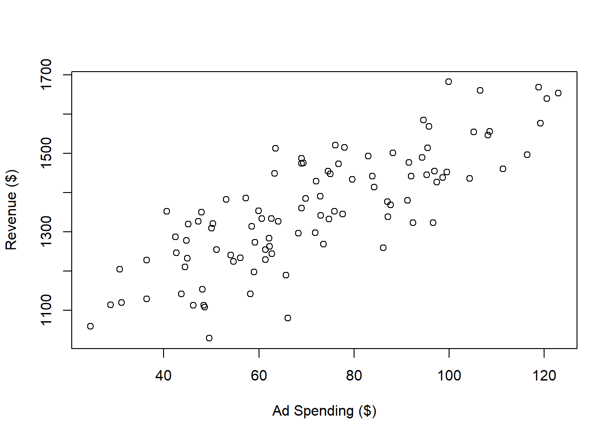
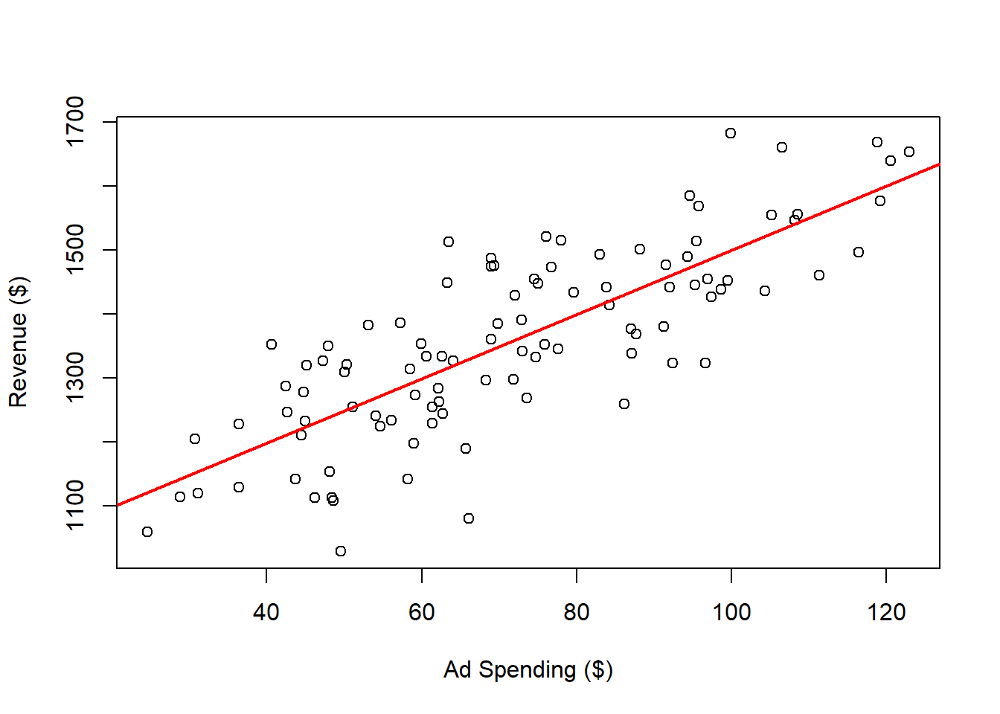
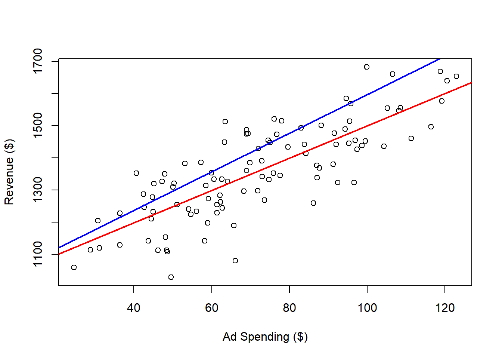
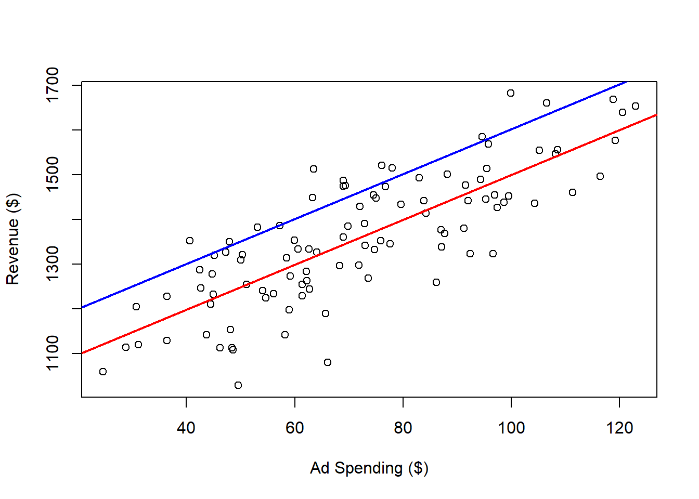
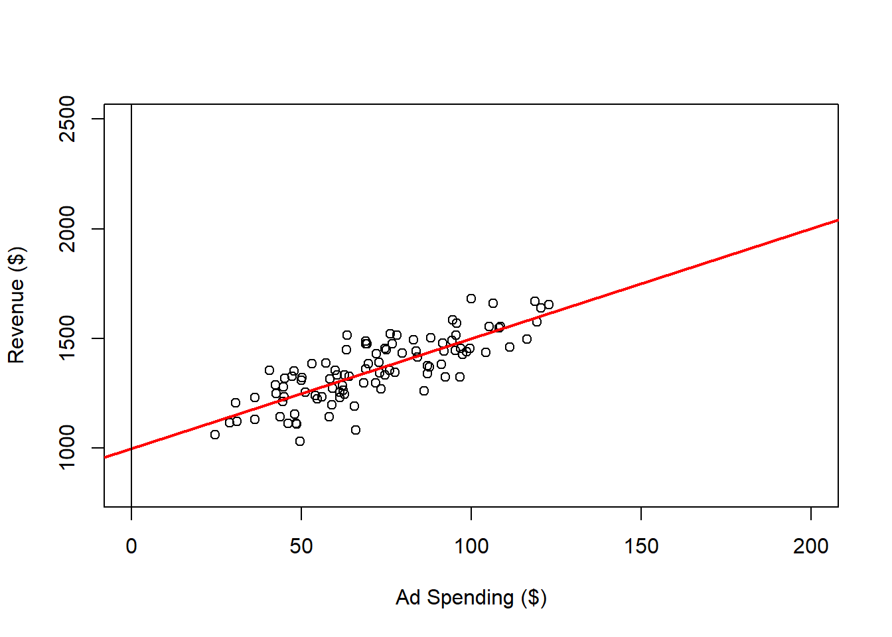
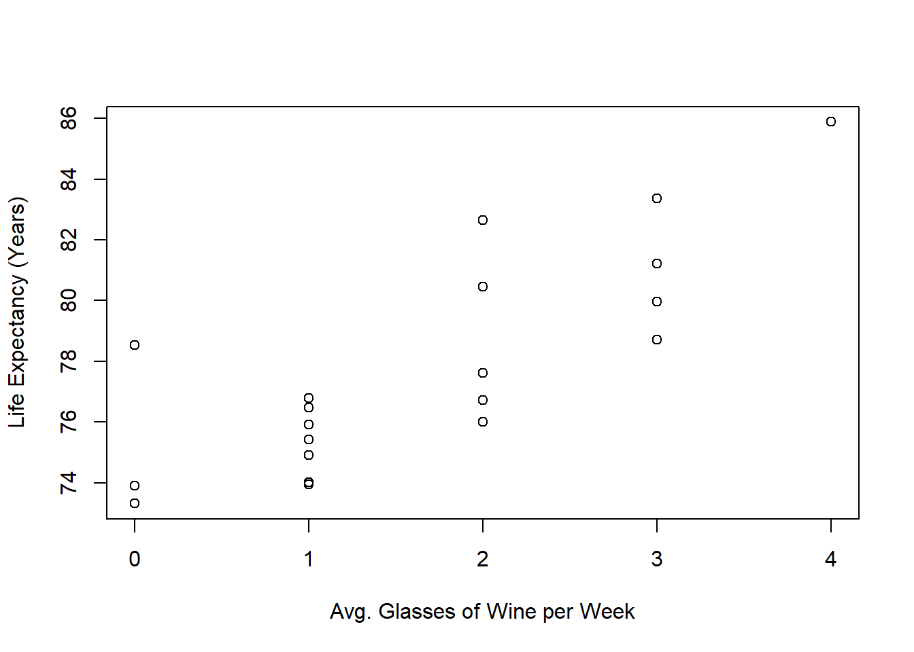
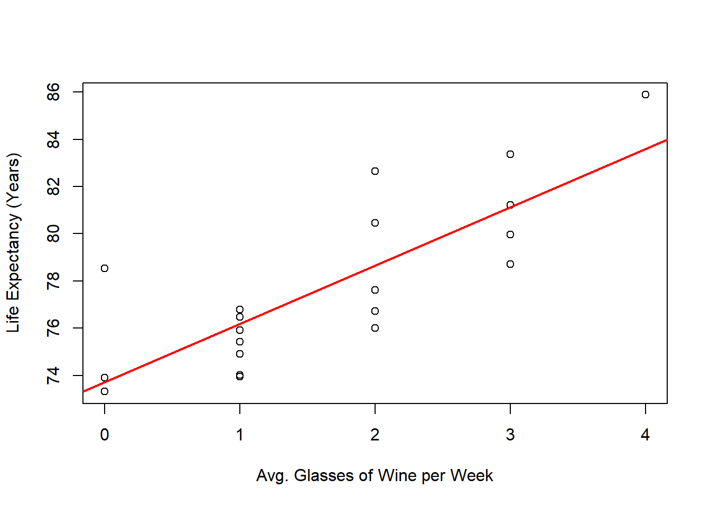
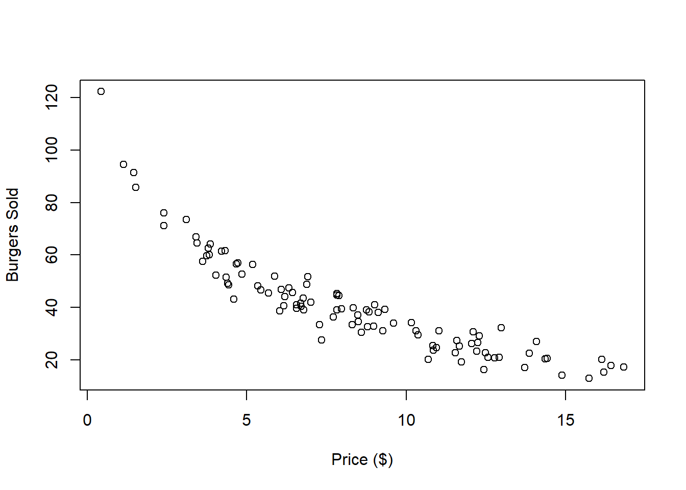
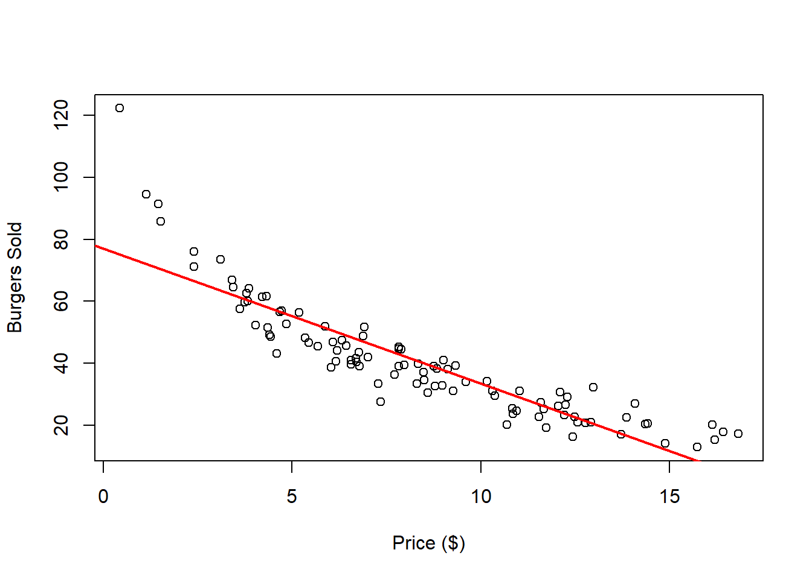
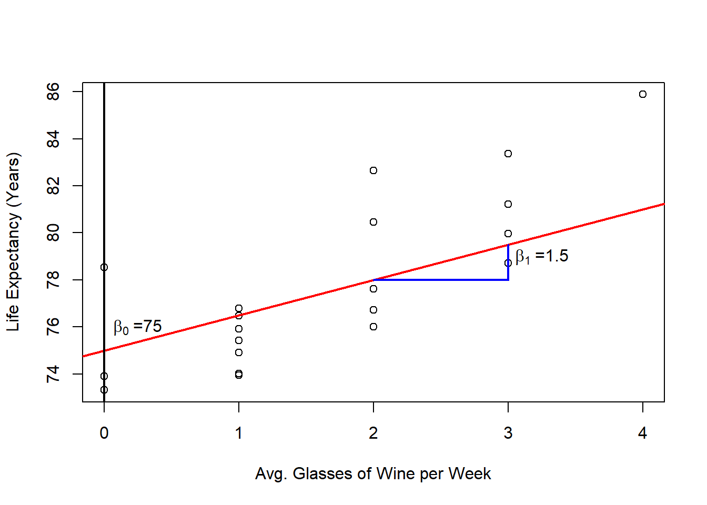

3 Introduction
3.1 Objectives of Linear Regression
Linear regression is a statistical method used to analyze the relationship between at least two variables: one dependent variable (called response in linear regression) and at least one independent variable (called explanatory variables in linear regression).
Linear regression is typically applied for three main purposes:
- Description: To describe the relationship between the variables under analysis.
- Prediction: To forecast the value of the response based on new observations of the explanatory variables.
- Control: To determine or choose values of the explanatory variable to influence response, when the setting permits a causal interpretation.
3.2 Examples
The following examples illustrate three different goals of linear regression: control, description, and prediction. They also demonstrate that fitting a line is always computationally possible, but that the resulting line is not necessarily an appropriate description of the data.
3.2.1 Ad Spending
Imagine you are a newly hired data scientist at a mattress company. Your manager asks you to analyze the relationship between Google ad spending and mattress sales revenue.
To illustrate this scenario, I have simulated a dataset:
# Ad Spending Example
# Set Seed
set.seed(8272024)
# Data Simulation
x <- rnorm(n = 100,
mean = 70,
sd = 30)
y <- 1000 + 5 * x + rnorm(n = 100, mean = 0, sd = 100)
# Creates the Data Frame
datAd <- data.frame(cbind(y,x))
# Names the Variables
colnames(datAd) <- c("Revenue", "Ad Spending")
# Saves to csv
write.csv(x = datAd[, c(1, 2)],
file = "Ad spending Data.csv", row.names = FALSE)You can load the dataset as follows:
To visualize the data:
dat <- read.csv(file = "Ad spending Data.csv")
plot(x = dat$Ad.Spending,
y = dat$Revenue,
xlab = "Ad Spending ($)",
ylab = "Revenue ($)")
Next, you can perform a linear regression analysis:
The most important results from the regression analysis can be summarized as follows:
##
## Call:
## lm(formula = Revenue ~ Ad.Spending, data = dat)
##
## Residuals:
## Min 1Q Median 3Q Max
## -248.394 -58.805 3.782 63.577 196.745
##
## Coefficients:
## Estimate Std. Error t value Pr(>|t|)
## (Intercept) 997.3894 28.8185 34.61 <2e-16 ***
## Ad.Spending 5.0247 0.3818 13.16 <2e-16 ***
## ---
## Signif. codes: 0 '***' 0.001 '**' 0.01 '*' 0.05 '.' 0.1 ' ' 1
##
## Residual standard error: 89.01 on 98 degrees of freedom
## Multiple R-squared: 0.6386, Adjusted R-squared: 0.6349
## F-statistic: 173.2 on 1 and 98 DF, p-value: < 2.2e-16For now, let’s focus on the estimate for the intercept and the Ad.Spending coefficient. The intercept gives the predicted revenue when ad spending is zero. Based on your analysis, you observe that even without an ad campaign, mattress sales generate 997.3893514. The coefficient for Ad.Spending shows that each dollar spent on ads increases revenue by 5.0247439.
To visualize the regression line:
plot(x = dat$Ad.Spending,
y = dat$Revenue,
xlab = "Ad Spending ($)",
ylab = "Revenue ($)")
abline(a = outReg$coefficients[1],
b = outReg$coefficients[2],
col = 'red',
lwd = 2)
The red regression line represents the “best fit” for these variables. In this context, “best fit” means the line that minimizes the sum of the squared vertical differences from each point to the line. For comparison, here are examples of other lines that do not fit as well:
Different slope (coefficient for the Ad.Spending variable):
plot(x = dat$Ad.Spending,
y = dat$Revenue,
xlab = "Ad Spending ($)",
ylab = "Revenue ($)")
abline(a = outReg$coefficients[1],
b = outReg$coefficients[2],
col = 'red',
lwd = 2)
abline(a = outReg$coefficients[1],
b = 6,
col = 'blue',
lwd = 2)
Different intercept:
plot(x = dat$Ad.Spending,
y = dat$Revenue,
xlab = "Ad Spending ($)",
ylab = "Revenue ($)")
abline(a = outReg$coefficients[1],
b = outReg$coefficients[2],
col = 'red',
lwd = 2)
abline(a = 1100,
b = outReg$coefficients[2],
col = 'blue',
lwd = 2)
We can expand the range for ad spending and revenue on the plot, as follows:
plot(x = dat$Ad.Spending,
y = dat$Revenue,
xlab = "Ad Spending ($)",
ylab = "Revenue ($)",
ylim = c(800, 2500),
xlim = c(0, 200))
abline(a = outReg$coefficients[1],
b = outReg$coefficients[2],
col = 'red',
lwd = 2)
abline(h = 0,
v = 0)
Within the range of observed ad spending values 25 to 123, the data provide direct information about the relationship between ad spending and revenue. However, what happens when we consider values outside this range?
While we can predict and control revenue to some extent by adjusting ad spending within the observed range, this confidence may not extend to values beyond it. For instance, it’s plausible that after reaching a certain level of ad spending, the market could become saturated, resulting in diminishing or even no additional revenue despite increased ad spending. Therefore, we should be cautious when extrapolating beyond the observed data, as the relationship may not hold under different conditions.
3.2.2 Wine and Life Expectancy
In the previous example, we were able to manipulate the explanatory variable to influence the outcome. However, there are situations where our primary goal is simply to describe the relationship between two variables, without aiming to control them. In the following example, I generate a dataset that illustrates the relationship between wine consumption and life expectancy in years for an imaginary country. Here’s how the data is simulated:
# Wine and Life Expectancy
# Set Seed
set.seed(8272024)
# Data Simulation
x <- rbinom(n = 20, size = 20, prob = 0.1)
y <- 75 + 1.5 * x + rnorm(n = 20, mean = 0, sd = 3)
# Creates the Data Frame
datWin <- data.frame(cbind(y,x))
# Names the Variables
colnames(datWin) <- c("Years", "Glasses")
# Saves to csv
write.csv(datWin[, c(1, 2)], file = "Wine Data.csv", row.names = FALSE)You should be able to generate the exact same data if you copy and paste the code and run it on your computer. Although the data is randomly simulated, I’ve set a seed to ensure that the simulation can be replicated consistently.
We can read and plot the data in as follows:
# Reads the Data
dat <- read.csv(file = "Wine Data.csv")
# Plots the Data
plot(x = dat$Glasses,
y = dat$Years,
xlab = "Avg. Glasses of Wine per Week",
ylab = "Life Expectancy (Years)")
Once again, we can perform a linear regression to examine the relationship between the variables and visualize it with a regression line:
# Performs Linear Regression
outReg <- lm(Years ~ Glasses, data = dat)
# Plots
plot(x = dat$Glasses,
y = dat$Years,
xlab = "Avg. Glasses of Wine per Week",
ylab = "Life Expectancy (Years)")
abline(a = outReg$coefficients[1],
b = outReg$coefficients[2],
col = 'red',
lwd = 2)
Given the regression line, can we confidently conclude that increasing wine consumption leads to a longer life expectancy?
The simulation is designed to generate a positive association between the variables. The fact that we used \(x\) to generate \(y\) computationally should not be interpreted as evidence that an analogous observed association in real data would be causal.
3.2.3 Burger Demand
Imagine you work at a burger franchise where prices change daily. As the franchise manager, you want to predict the demand for burgers at a given price. Over the past 100 days, you’ve collected data on the number of burgers sold at each price set by the franchise’s main office. Here’s what your data looks like:
# Reads the Data
dat <- read.csv(file = "Burger Data.csv")
# Plots the Data
plot(x = dat$Price,
y = dat$Burgers,
xlab = "Price ($)",
ylab = "Burgers Sold")
Is this dataset a good candidate for linear regression? While it’s true that we can always fit a line to any dataset, the real question is whether that line meaningfully represents the relationship between the variables. Here’s what happens when we apply linear regression to this data:
# Performs Linear Regression
outReg <- lm(Burgers ~ Price, data = dat)
# Plots
plot(x = dat$Price,
y = dat$Burgers,
xlab = "Price ($)",
ylab = "Burgers Sold")
abline(a = outReg$coefficients[1],
b = outReg$coefficients[2],
col = 'red',
lwd = 2)
Do you think this is a good fit for the data? The regression line appears to be inadequate for both low and high price points. Since the number of burgers sold cannot be negative, the linear model becomes unreasonable over ranges of prices for which it predicts zero or negative demand.
3.3 Intro to SLR
Simple linear regression (SLR) is a linear regression model with a single explanatory variable. It focuses on the linear relationship between one explanatory variable and one response, making it the most basic form of linear regression analysis.
3.3.1 A Path Not Taken
The basic idea behind linear regression is to find the “best line” that describes the data. This idea admits several interpretations. One interpretation is to measure the distance between a candidate line and the data points. For a line \(\mathcal{l}\) given by
\[ ax + by + c = 0 \]
the distance from a point \((x_i,y_i)\) to that line is
\[ d_i = d(\mathcal{l},(x_i,y_i)) = \frac{|ax_i + by_i + c|}{\sqrt{a^2+b^2}}. \]
We could then pose the optimization problem
\[ \min_{a,b,c: a^2 + b^2 > 0} \sum_{i=1}^n d_i. \]
However, those familiar with regression will recognize that this is not the standard linear regression formulation. That does not make the distance-minimization problem unreasonable, only that its solution will generally differ from the usual linear regression solution.
The standard least-squares formulation of linear regression makes a particular optimization choice because of its convenient properties.. In the next section we introduce a model that refines the notion of a “best line.”
3.3.2 SLR Model
The model for simple linear regression is as follows:
\[y_i = \beta_0 + \beta_1 x_i + e_i, \quad i\in\{1,\ldots,n\}\]
where:
- \(y_i\) represents the \(i\)-th observation of the response.
- \(x_i\) represents the \(i\)-th observation of the explanatory variable.
- \(e_i\) represents the \(i\)-th observation of the error term.
- \(\beta_0\) is the intercept of the linear model, or regression line.
- \(\beta_1\) is the slope of the linear model, or regression line.
- \(n\) is the number of observations for both variables.
Notice that in this framework, the error measures the signed vertical difference between the observed point and the regression line, rather than the perpendicular distance from the point to the line. Also, note that we are not making any assumptions about the error terms.
In the case of the wine example, we generated the data based on the following linear model:
\[y_i = 75 + 1.5 x_i + e_i \]
dat <- read.csv(file = "Wine Data.csv")
plot(x = dat$Glasses,
y = dat$Years,
xlab = "Avg. Glasses of Wine per Week",
ylab = "Life Expectancy (Years)")
abline(a = 75,
b = 1.5,
col = 'red',
lwd = 2)
abline(v = 0,
lwd = 2)
text(x = 0.25, y = 76, expression(beta[0] ~ "=75"))
text(x = 3.25, y = 79, expression(beta[1] ~ "=1.5"))
segments(x0 = c(2, 3),
x1 = c(3, 3),
y0 = c(78, 78),
y1 = c(78, 79.5),
lwd = 2,
col = 'blue')
In this case, the intercept \(\beta_0\) is meaningful, as it represents the value predicted by the linear component of the model for a person who drinks no wine.. However, depending on the data, the intercept may or may not have a meaningful interpretation. The slope \(\beta_1\) indicates that for each additional glass of wine consumed per week, our model predicts an increase of 1.5 years in life expectancy.
In practice, we rarely know the true regression line. Instead, it must be estimated from the data. The goal is to find the “best” line that fits the data, where “best” means the line that minimizes the sum of squared errors (SSE) between the observed values and the values predicted by the model.
3.3.3 Possible Optimization Problems
Other than minimizing the sum of squared errors (SSE), we can consider the following alternative optimization problems. Here \((e_i(\beta_0,\beta_1)=y_i-(\beta_0+\beta_1 x_i)\) denotes the vertical error associated with a candidate line.
3.3.3.1 Minimizing the Sum of Absolute Errors
\[ \min_{\beta_0, \beta_1} \sum_{i=1}^n |e_i(\beta_0, \beta_1)| \]
This L1 criterion is common in the machine-learning community and is more robust to outliers than the SSE. Laplace was among the first to investigate this approach when developing early methods for fitting lines to data.
3.3.3.2 Minimizing the Maximum Error
\[ \min_{\beta_0, \beta_1} \max_{i=1}^n |e_i(\beta_0, \beta_1)| \]
The minimax approach focuses on reducing the largest error and is appropriate when large errors can be catastrophic. Laplace also explored this formulation in his early work.
3.3.3.3 Minimizing the Sum of Squared Errors
\[ \min_{\beta_0, \beta_1} \sum_{i=1}^n e_i(\beta_0, \beta_1)^2 \]
This is the standard formulation in simple linear regression (the least squares criterion), introduced by Legendre and Gauss (apparently independently).It remains widely used because of its convenient mathematical and computational properties, which we will analyze in the following sections.
3.4 Exercises
The following exercises explore how different characteristics of a dataset affect the usefulness of a linear regression model. The main objective is not simply to fit a regression line, since a line can always be fitted, but to determine whether that line provides a meaningful representation of the relationship between the variables.
For each exercise involving simulated or collected data, begin by plotting the data before fitting a regression model.
3.4.1 Exercise 1: Changing the Intercept
Simulate \(100\) observations from the relationship
\[ y = \beta_0 + 5x + e, \]
where \(x\) is generated using
and \(e\) is generated using rnorm() with mean \(0\) and standard deviation \(50\).
Consider the following three values for the intercept:
\[ \beta_0 = 0, \qquad \beta_0 = 500, \qquad \beta_0 = 1000. \]
For each value:
- Simulate the response variable \(y\) using the same values of \(x\) and \(e\).
- Plot \(y\) against \(x\).
- Fit a linear regression using
lm(). - Add the fitted regression line to the plot.
- Compare the three plots.
- Explain what changes when the intercept changes and what remains approximately the same.
- Give a practical interpretation of the intercept in each simulation.
3.4.2 Exercise 2: Changing the Slope
Generate one set of \(100\) values of \(x\) between \(0\) and \(100\) and one set of random errors. Using the same \(x\) and errors, simulate
\[ y = 500 + \beta_1x + e \]
for
\[ \beta_1 = -5, \qquad \beta_1 = 0, \qquad \beta_1 = 2, \qquad \beta_1 = 10. \]
For each dataset:
- Make a scatterplot.
- Fit a linear regression.
- Add the fitted line.
- Record the estimated slope and intercept.
- Describe the direction of the relationship.
- Explain how the magnitude of the slope changes the relationship between \(x\) and \(y\).
- Explain what a slope close to zero means.
3.4.3 Exercise 3: Different Intercepts and Slopes
Consider the following four relationships:
\[ y = 100 + 2x + e, \]
\[ y = 100 + 8x + e, \]
\[ y = 700 + 2x + e, \]
and
\[ y = 700 - 4x + e. \]
Use the same \(100\) values of \(x\) and the same random errors for all four datasets.
Simulate all four datasets.
Create a scatterplot for each.
Before fitting the regression models, identify which datasets have:
- the same intercept,
- the same slope,
- positive relationships,
- negative relationships.
Fit a regression to each dataset.
Compare the estimated coefficients with the values used to generate the data.
Explain how the plot allows you to distinguish changes in slope from changes in intercept.
3.4.4 Exercise 4: Increasing the Amount of Noise
Generate \(100\) observations from
\[ y = 1000 + 5x + e, \]
where \(x\) is between \(0\) and \(100\).
Generate four datasets by changing only the standard deviation of \(e\):
\[ 10,\qquad 50,\qquad 200,\qquad 500. \]
For each dataset:
- Plot the data.
- Fit and display the regression line.
- Compare the estimated slopes.
- Describe how the appearance of the relationship changes as the variability increases.
- At what point does the linear relationship become difficult to recognize visually?
- Does increased variability necessarily change the underlying slope used to generate the data?
3.4.5 Exercise 5: No Relationship
Generate \(100\) observations of \(x\) using runif() and separately generate \(100\) observations of \(y\) using rnorm(), so that the construction does not impose a relationship between them.
For example, \(x\) might represent advertising expenditure while \(y\) represents sales from a process that is completely unrelated to advertising.
- Plot the data.
- Fit a linear regression.
- Add the fitted line.
- Interpret the estimated slope.
- Repeat the simulation several times.
- Is the estimated slope exactly zero every time?
- Does the existence of a nonzero fitted slope necessarily imply that there is a meaningful relationship between the variables?
3.4.6 Exercise 6: A Quadratic Relationship
Generate \(100\) values of \(x\) between \(-10\) and \(10\) and simulate
\[ y = 100 + 4x^2 + e, \]
where \(e\) has relatively small variability.
- Plot \(y\) against \(x\).
- Fit the linear model
\[ y = \beta_0 + \beta_1x + e. \]
- Add the fitted line to the scatterplot.
- Does the line adequately describe the data?
- Describe the pattern that the regression line fails to capture.
- Explain why looking only at the estimated slope could be misleading.
- Increase the variability of \(e\) and repeat the exercise. At what point does the nonlinear pattern become difficult to identify?
3.4.7 Exercise 7: Diminishing Returns
Suppose the effect of advertising becomes smaller as advertising expenditure increases.
Generate \(100\) values of \(x\) between \(0\) and \(200\) and simulate data from a relationship such as
\[ y = 1000 + 500\log(x+1) + e. \]
- Plot the data.
- Fit a linear regression of \(y\) on \(x\).
- Add the regression line.
- Identify the ranges of \(x\) where the line appears to fit reasonably well.
- Identify the ranges where it fits poorly.
- Explain why a single slope is inadequate for describing the entire relationship.
- Relate this example to the possibility of saturation in the Ad Spending example.
3.4.8 Exercise 8: A Relationship That Changes
Suppose advertising is effective up to a certain expenditure but becomes less effective afterward.
Generate \(x\) between \(0\) and \(200\) and construct \(y\) so that:
- when \(x \leq 100\), revenue increases rapidly as \(x\) increases;
- when \(x > 100\), revenue continues increasing, but much more slowly.
Add random variation to the response.
- Write R code to simulate such a dataset.
- Plot the data.
- Fit one regression line to all observations.
- Does the fitted line adequately represent either part of the relationship?
- Describe how the slope appears to change around \(x=100\).
- Explain why a model that assumes one constant slope can be inappropriate in this situation.
3.4.9 Exercise 9: Saturation
Simulate a situation in which increasing \(x\) initially causes \(y\) to increase, but eventually additional increases in \(x\) produce almost no change in \(y\).
For example, imagine:
- \(x\) = amount spent on advertising,
- \(y\) = number of potential customers reached.
- Construct a nonlinear function with this behavior.
- Generate at least \(100\) observations and add random variation.
- Plot the resulting data.
- Fit a linear regression.
- Determine whether the regression line tends to overpredict or underpredict the response at different values of \(x\).
- Explain why extrapolating the fitted line to very large values of \(x\) would be unreasonable.
3.4.10 Exercise 10: The Effect of an Outlier
Generate \(100\) observations from
\[ y = 500 + 3x + e \]
with relatively small random variation.
- Plot the data and fit a regression line.
- Record the estimated intercept and slope.
- Modify one observation so that its response value is much larger than the rest of the data.
- Refit the regression.
- Compare the new regression line with the original one.
- Move the unusual observation to a very large value of \(x\) and repeat the analysis.
- Which unusual observation produces the larger change in the fitted line?
- Explain why a small number of observations can sometimes substantially change the apparent relationship.
3.4.11 Exercise 11: Restricted Range
Generate \(200\) observations from
\[ y = 100 + 4x + e, \]
where \(x\) ranges from \(0\) to \(100\).
First analyze all \(200\) observations. Then create a second dataset containing only observations for which
\[ 40 \leq x \leq 60. \]
For both datasets:
- Plot the observations.
- Fit a regression line.
- Compare the estimated slopes.
- Compare how clearly the relationship can be seen in the two scatterplots.
- Explain why observing only a small range of the explanatory variable can make a relationship more difficult to identify.
3.4.12 Exercise 12: Extrapolation
Generate observations from a relationship that is approximately linear for
\[ 0 \leq x \leq 100, \]
but changes after \(x=100\).
For example, the response could increase linearly until \(x=100\) and then remain approximately constant.
However, suppose that only observations with \(x \leq 100\) are available when fitting the model.
- Fit a linear regression using only the observed range.
- Plot the fitted line for values of \(x\) between \(0\) and \(200\).
- Generate the true response values for the entire range from \(0\) to \(200\).
- Add these values to the plot.
- Compare predictions inside and outside the original range of the data.
- Explain why a model can fit the observed data very well but still produce poor predictions through extrapolation.
3.4.13 Exercise 13: Positive Responses and Impossible Predictions
Suppose \(x\) represents the price of a burger and \(y\) represents the number of burgers sold.
Simulate a decreasing relationship in which burger demand is always positive but decreases nonlinearly as price increases.
- Plot the simulated data.
- Fit a linear regression.
- Extend the fitted regression line beyond the range of observed prices.
- Determine the price at which the fitted line predicts zero burgers sold.
- What does the model predict for even larger prices?
- Explain why these predictions are not reasonable.
- Does this mean the regression line is necessarily useless within the observed range? Explain.
3.4.14 Exercise 14: Two Different Groups
Suppose you collect data from two stores. Within each store, sales increase approximately linearly with advertising expenditure, but one store consistently sells more mattresses than the other.
Simulate approximately \(50\) observations from each store such that:
- both stores have approximately the same slope,
- the stores have noticeably different intercepts.
Combine all observations into one dataset.
- Plot both stores using different plotting symbols.
- Examine the relationship within each store.
- Ignore the store labels and fit one regression line to all observations.
- Does a single line adequately describe both groups?
- Explain what information is lost when the store identity is ignored.
- Modify the simulation so that the two stores also have different slopes. Describe how the combined plot changes.
3.4.15 Exercise 15: Collecting Your Own Data
Choose two quantitative variables that you can measure or obtain for at least \(20\) observational units.
Possible examples include:
- height and arm span,
- distance traveled and travel time,
- temperature and electricity consumption,
- size and price of similar products,
- number of reviews and price of products listed online.
For your selected variables:
- Clearly define the response and explanatory variables.
- Explain how the observations were collected.
- Create a scatterplot.
- Before fitting a regression line, describe the relationship you observe.
- Decide whether a straight line appears to be a reasonable description.
- Fit a linear regression.
- Add the fitted line to the plot.
- Interpret the slope and intercept in the context of your data.
- State whether the primary purpose of the analysis is description, control, or prediction.
- Identify at least one reason why predictions outside the range of your observed \(x\) values could be unreliable.
3.4.16 Exercise 16: Control Versus Description
Create or collect two datasets:
- A dataset in which the explanatory variable could realistically be manipulated.
- A dataset in which the explanatory variable is only observed and cannot reasonably be manipulated by the researcher.
For each dataset:
- Identify \(x\) and \(y\).
- Plot the variables.
- Fit a linear regression.
- Interpret the estimated slope.
- Determine whether the relationship is primarily useful for description, control, or prediction.
- For the observational dataset, explain why an estimated relationship does not automatically imply that changing \(x\) would cause \(y\) to change.
Relate your reasoning to the difference between the Ad Spending and Wine and Life Expectancy examples.
3.4.17 Exercise 17: Same Linear Model, Different Data
Generate three datasets using the same relationship
\[ y = 500 + 5x + e, \]
but change the way the \(x\) values are generated.
Use:
- values spread approximately uniformly across an interval;
- values concentrated near the center of the interval;
- values concentrated into two separated groups.
Use the same approximate range for \(x\) in all three datasets.
For each dataset:
- Create a scatterplot.
- Fit a regression line.
- Compare the appearance of the three plots.
- Compare the estimated slopes and intercepts.
- Explain how the distribution of observed \(x\) values affects what portions of the relationship are well represented by the data.
- Which dataset would make you most comfortable predicting throughout the entire range of \(x\)? Explain using the observed data rather than only the fitted line.
3.4.18 Exercise 18: Build a Dataset Where a Line Is Misleading
Construct your own simulated dataset for which lm() produces a regression line but the line is clearly an inadequate description of the relationship.
Your dataset must have at least \(100\) observations and should demonstrate at least two of the following characteristics:
- curvature,
- saturation,
- an abrupt change in the relationship,
- an unusual observation,
- different groups,
- increasing or decreasing variability,
- a restricted range of observed values,
- a response that cannot reasonably take some values predicted by the line.
For your dataset:
- Explain how you generated the data.
- Plot the observations.
- Fit and display a regression line.
- Identify the characteristics that make the line inadequate.
- Describe which portions of the data, if any, are reasonably represented by the fitted line.
- Explain what could go wrong if the fitted model were used for prediction or control.
- Summarize, in a few sentences, why fitting a line and determining that a linear model is appropriate are two different tasks.